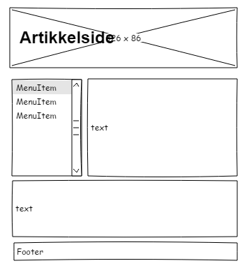
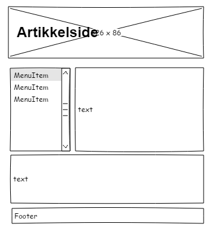

Planleggingen av nettsiden:
Jeg brukte programmet pencil til å lage strukturskissene til forsiden og artikkelsiden. Først lagde jeg et utkast, men etterhvert som jeg jobber litt med forsiden fant jeg ut at jeg ville endre skissen litt. Jeg søkte litt på nettet for å finne løsningsforslag for å designe nettsiden, spesielt ulike elementer fra W3 School.
Navigering:
Først tenkte jeg å ha en horisontal meny, men endte opp med å heller velge en vertikal versjon for å skape litt mer kreativ utforming. Samtidig syns jeg menyen til venstre er oversiktig, spesielt når jeg har en bakgrunnsfarge på den nettsiden man befinner seg på, og det er lett å komme seg tilbake til forsiden. Jeg ville sette inn noen bilder for å skape et finere bilde av nettsiden.
Strukturskissene:
 

Disse har jeg laget i pensil programmet.
| Beskrivelse | URL |
|---|---|
| Enkel og oversiktig forside | Carlex |
| Bruk av bokser | Interflora |
| Fin header | American wedding bands |
| Ryddig og enkel header | Wix.com |